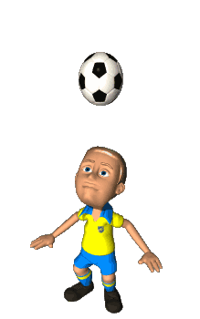

La Ligue 1 y oficialmente como Campeonato de fútbol francés es la primera división del sistema de ligas del fútbol francés organizada por la Ligue de Football Professionnel. Está formada por veinte clubes que operan en un sistema de ascensos y descensos con la Ligue 1 , la segunda división francesa. Creada en 1932 bajo el nombre de Division nationale, se convirtió en 1972 en División 1 y recibió en 2002 su nombre actual de Ligue 1 . La temporada se extiende desde agosto a mayo, con equipos que juegan 38 partidos cada uno por un total de 380 partidos en la temporada. Se otorga el título de campeón de la Ligue 1 al club que termine primero de la clasificación al final de la temporada. Los clubes de la Liga 1 participan en la supercopa y en la Copa de Francia. Antiguamente también participaban en la desaparecida Copa de la Liga.
Ligue 1 (Francia)
A lo largo de su historia, dieciocho clubes han resultado campeones de la Ligue 1 , siendo el más laureado
con 10 títulos el A.S. Saint-Étienne, seguido del Olympique de Marsella y París Saint-Germain (9), F. C.
Nantes y A. S. Mónaco (8), Olympique de Lyon (7), Girondins de Burdeos y Stade de Reims (6), Lille O. S. C.
(5), O. G. C. Niza (4), F. C. Sochaux-Montbéliard y F. C. Sète (2) y R. C. Lens, R. C. París, Racing Estrasburgo,
A. J. Auxerre, Montpellier Hérault S. C. y C. O. Roubaix-Tourcoing con un título.
El actual campeón es el Lille O. S. C., que conquistó su quinto título en la temporada 2020-2021.
Según la Federación Internacional de Historia y Estadística de Fútbol (IFFHS), es la séptima liga más relevante del mundo.